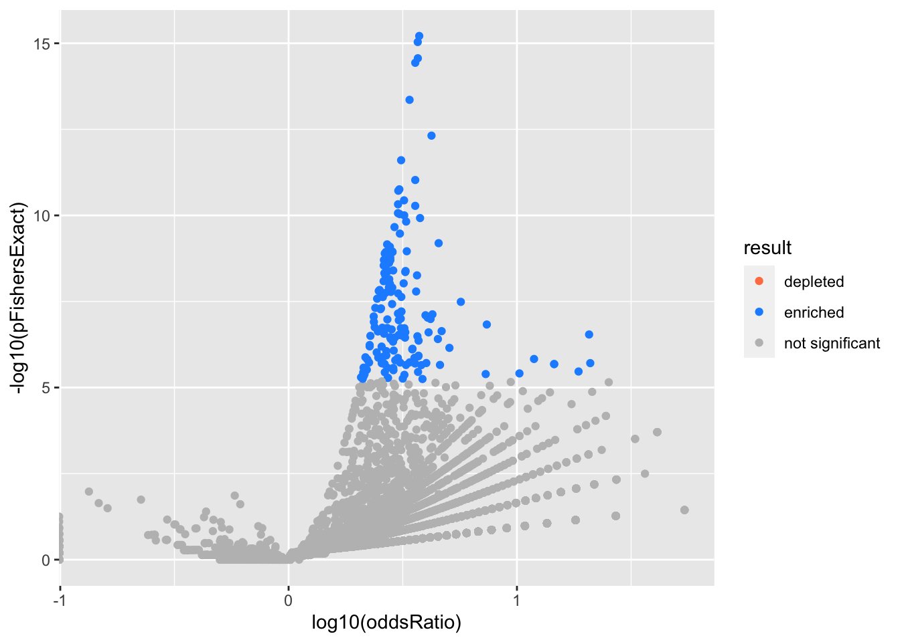

example_yusha_sc_tumor
karltayeb
2022-07-13
Last updated: 2022-07-14
Checks: 7 0
Knit directory: logistic-susie-gsea/
This reproducible R Markdown analysis was created with workflowr (version 1.7.0). The Checks tab describes the reproducibility checks that were applied when the results were created. The Past versions tab lists the development history.
Great! Since the R Markdown file has been committed to the Git repository, you know the exact version of the code that produced these results.
Great job! The global environment was empty. Objects defined in the global environment can affect the analysis in your R Markdown file in unknown ways. For reproduciblity it’s best to always run the code in an empty environment.
The command set.seed(20220105) was run prior to running
the code in the R Markdown file. Setting a seed ensures that any results
that rely on randomness, e.g. subsampling or permutations, are
reproducible.
Great job! Recording the operating system, R version, and package versions is critical for reproducibility.
Nice! There were no cached chunks for this analysis, so you can be confident that you successfully produced the results during this run.
Great job! Using relative paths to the files within your workflowr project makes it easier to run your code on other machines.
Great! You are using Git for version control. Tracking code development and connecting the code version to the results is critical for reproducibility.
The results in this page were generated with repository version 24146ef. See the Past versions tab to see a history of the changes made to the R Markdown and HTML files.
Note that you need to be careful to ensure that all relevant files for
the analysis have been committed to Git prior to generating the results
(you can use wflow_publish or
wflow_git_commit). workflowr only checks the R Markdown
file, but you know if there are other scripts or data files that it
depends on. Below is the status of the Git repository when the results
were generated:
Ignored files:
Ignored: .DS_Store
Ignored: .RData
Ignored: .Rhistory
Ignored: .Rproj.user/
Ignored: _targets.R
Ignored: _targets.html
Ignored: _targets.md
Ignored: _targets/objects/
Ignored: _targets/user/
Ignored: _targets/workspaces/
Ignored: _targets_r/
Ignored: cache/
Ignored: data/.DS_Store
Ignored: data/adipose_2yr_topsnp.txt
Ignored: data/anthony/
Ignored: data/de-droplet/
Ignored: data/deng/
Ignored: data/fetal_reference_cellid_gene_sets.RData
Ignored: data/human_chimp_eb/
Ignored: data/pbmc-purified/
Ignored: data/wenhe_baboon_diet/
Ignored: data/yusha_sc_tumor/
Ignored: library/
Ignored: renv/
Ignored: staging/
Untracked files:
Untracked: .ipynb_checkpoints/
Untracked: Master's Paper.pdf
Untracked: Project_1652928411/
Untracked: Project_1653228324/
Untracked: Project_1653228355/
Untracked: VEB_Boost_Proposal_Write_Up (1).pdf
Untracked: _targets/meta/
Untracked: additive.l5.gonr.aggregate.scores
Untracked: analysis/alpha_ash_v_point_normal.Rmd
Untracked: analysis/compare_w_post_hoc_clustering.Rmd
Untracked: analysis/de_droplet_noshrink.Rmd
Untracked: analysis/de_droplet_noshrink_logistic_susie.Rmd
Untracked: analysis/example_anthony.Rmd
Untracked: analysis/fetal_reference_cellid_gsea.Rmd
Untracked: analysis/fixed_intercept.Rmd
Untracked: analysis/gsea_made_simple.Rmd
Untracked: analysis/iDEA_examples.Rmd
Untracked: analysis/latent_gene_list.Rmd
Untracked: analysis/linear_method_failure_modes.Rmd
Untracked: analysis/linear_regression_failure_regime.Rmd
Untracked: analysis/linear_v_logistic_pbmc.Rmd
Untracked: analysis/logistic_susie_veb_boost_vs_vb.Rmd
Untracked: analysis/logistic_susie_vis.Rmd
Untracked: analysis/logistic_variational_bound.Rmd
Untracked: analysis/logsitic_susie_template.Rmd
Untracked: analysis/pcb_scratch.Rmd
Untracked: analysis/references.bib
Untracked: analysis/roadmap.Rmd
Untracked: analysis/simulations.Rmd
Untracked: analysis/simulations_l1.Rmd
Untracked: analysis/tccm_vs_logistic_susie.Rmd
Untracked: analysis/template.Rmd
Untracked: analysis/test.Rmd
Untracked: build_site.R
Untracked: code/html_tables.R
Untracked: code/latent_logistic_susie.R
Untracked: code/logistic_susie_data_driver.R
Untracked: code/marginal_sumstat_gsea_collapsed.R
Untracked: code/point_normal.R
Untracked: code/sumstat_gsea.py
Untracked: code/susie_gsea_queries.R
Untracked: docs.zip
Untracked: export/
Untracked: l1.sim.aggregate.scores
Untracked: pbmc_cd19_symbol.txt
Untracked: pbmc_cd19b_0.1_background.csv
Untracked: pbmc_cd19b_0.1_david_annotation_clusters.txt
Untracked: pbmc_cd19b_0.1_david_results.txt
Untracked: pbmc_cd19b_0.1_list.csv
Untracked: presentations/
Untracked: references.bib
Unstaged changes:
Modified: analysis/example_pbmc.Rmd
Note that any generated files, e.g. HTML, png, CSS, etc., are not included in this status report because it is ok for generated content to have uncommitted changes.
These are the previous versions of the repository in which changes were
made to the R Markdown
(analysis/example_yusha_sc_tumor.Rmd) and HTML
(docs/example_yusha_sc_tumor.html) files. If you’ve
configured a remote Git repository (see ?wflow_git_remote),
click on the hyperlinks in the table below to view the files as they
were in that past version.
| File | Version | Author | Date | Message |
|---|---|---|---|---|
| Rmd | 24146ef | karltayeb | 2022-07-14 | wflow_publish("analysis/example_yusha_sc_tumor.Rmd") |
Load data
source('code/load_data.R')── Attaching packages ─────────────────────────────────────── tidyverse 1.3.1 ──✔ ggplot2 3.3.6 ✔ purrr 0.3.4
✔ tibble 3.1.7 ✔ dplyr 1.0.9
✔ tidyr 1.2.0 ✔ stringr 1.4.0
✔ readr 2.1.2 ✔ forcats 0.5.1── Conflicts ────────────────────────────────────────── tidyverse_conflicts() ──
✖ dplyr::filter() masks stats::filter()
✖ dplyr::lag() masks stats::lag()library(gseasusie)
# save output to a folder... helps for running many factors
cache_rds = purrr::partial(xfun::cache_rds, dir='cache/sc_tumor/')
driver = function(gs, experiment){
dat <- gseasusie::prep_binary_data(gs, data[[experiment]])
ora <- gseasusie::fit_ora(dat$X, dat$y)
# add description
ora <- ora %>%
dplyr::left_join(gs$geneSetDes)
fit <- gseasusie::fit_logistic_susie_veb_boost(dat$X, dat$y)
return(list(fit=fit, ora=ora))
}
driver_cached = function(prefix, gs, experiment){
file = paste0(prefix, '_', gs$db, '_', experiment, '.rds')
print(file)
cache_rds(driver(gs, experiment), file=file)
}data <- load_sc_tumor_hnscc()'select()' returned 1:many mapping between keys and columnsgo <- gseasusie::load_all_go()loading gene set from webgestaltr: geneontology_Biological_Processloading gene set from webgestaltr: geneontology_Molecular_Functionloading gene set from webgestaltr: geneontology_Cellular_Componenthnscc_res <- purrr::map(names(data), ~driver_cached('hnscc', go, .x))[1] "hnscc_all_go_factor10.rds"
[1] "hnscc_all_go_factor11.rds"
[1] "hnscc_all_go_factor12.rds"
[1] "hnscc_all_go_factor13.rds"
[1] "hnscc_all_go_factor14.rds"
[1] "hnscc_all_go_factor15.rds"
[1] "hnscc_all_go_factor16.rds"
[1] "hnscc_all_go_factor17.rds"
[1] "hnscc_all_go_factor18.rds"
[1] "hnscc_all_go_factor19.rds"
[1] "hnscc_all_go_factor2.rds"
[1] "hnscc_all_go_factor20.rds"
[1] "hnscc_all_go_factor21.rds"
[1] "hnscc_all_go_factor22.rds"
[1] "hnscc_all_go_factor23.rds"
[1] "hnscc_all_go_factor24.rds"
[1] "hnscc_all_go_factor3.rds"
[1] "hnscc_all_go_factor4.rds"
[1] "hnscc_all_go_factor5.rds"
[1] "hnscc_all_go_factor6.rds"
[1] "hnscc_all_go_factor7.rds"
[1] "hnscc_all_go_factor8.rds"
[1] "hnscc_all_go_factor9.rds"names(hnscc_res) <- names(data)static_table = function(fit, ora){
res <- gseasusie:::get_gene_set_summary(fit) %>%
dplyr::left_join(ora)
csdat <- gseasusie:::get_credible_set_summary(fit) %>%
dplyr::left_join(ora) %>%
dplyr::filter(in_cs, active_cs) %>%
dplyr::select(geneSet, description, component, in_cs, alpha) %>%
distinct()
dt <- res %>%
dplyr::filter(overlap > 0) %>%
dplyr::mutate(
logOddsRatio = log(oddsRatio),
nlog10pFishersExact = -log10(pFishersExact)
) %>%
dplyr::left_join(csdat) %>%
dplyr::arrange(dplyr::desc(nlog10pFishersExact)) %>%
dplyr::mutate(
fisherRank = dplyr::row_number(),
in_cs = dplyr::if_else(is.na(in_cs), FALSE, in_cs)) %>%
dplyr::filter(in_cs) %>%
dplyr::select(tidyselect::any_of(
c("geneSet", "description", "beta", "alpha", "pip", "overlap", "geneSetSize", "logOddsRatio", "nlog10pFishersExact", "in_cs", "component", "fisherRank"))) %>%
dplyr::mutate(dplyr::across(!where(is.numeric) , as.factor))
dt %>%
dplyr::select(
component, geneSet, description, geneSetSize, overlap,
logOddsRatio, beta,
alpha, pip, nlog10pFishersExact, fisherRank) %>%
dplyr::mutate_if(is.numeric, funs(as.character(signif(., 3)))) %>%
pack_group %>%
kableExtra::column_spec(c(7), color=ifelse(dt$beta > 0, 'green', 'red')) %>%
kableExtra::kable_styling()
}data <- load_sc_tumor_pdac()'select()' returned 1:many mapping between keys and columnspdac_res <- purrr::map(names(data), ~driver_cached('pdac', go, .x))[1] "pdac_all_go_factor10.rds"
[1] "pdac_all_go_factor11.rds"
[1] "pdac_all_go_factor15.rds"
[1] "pdac_all_go_factor16.rds"
[1] "pdac_all_go_factor17.rds"
[1] "pdac_all_go_factor19.rds"
[1] "pdac_all_go_factor2.rds"
[1] "pdac_all_go_factor20.rds"
[1] "pdac_all_go_factor24.rds"
[1] "pdac_all_go_factor25.rds"
[1] "pdac_all_go_factor26.rds"
[1] "pdac_all_go_factor28.rds"
[1] "pdac_all_go_factor3.rds"
[1] "pdac_all_go_factor30.rds"
[1] "pdac_all_go_factor32.rds"
[1] "pdac_all_go_factor4.rds"
[1] "pdac_all_go_factor5.rds"
[1] "pdac_all_go_factor6.rds"
[1] "pdac_all_go_factor7.rds"
[1] "pdac_all_go_factor8.rds"results <- hnscc_res
experiments <- names(results)
safe_static_table <- purrr::safely(
gseasusie::static_table,
otherwise = 'nothing to report')
for(this_experiment in experiments){
sub_res <- results[[this_experiment]]
volcano <- gseasusie::enrichment_volcano(fit=sub_res$fit, ora=sub_res$ora)
results[[this_experiment]]$volcano <- volcano
table <- safe_static_table(sub_res$fit, sub_res$ora)$result
results[[this_experiment]]$table <- table
}cat('\n')cat('##', 'HNSCC')HNSCC
for(this_experiment in experiments){
cat('\n')
cat('###', this_experiment)
#sub_res <- results[[this_experiment]]
#volcano <- gseasusie::enrichment_volcano(fit=sub_res$fit, ora=sub_res$ora)
print(results[[this_experiment]]$volcano)
cat("\n\n")
#table <- safe_static_table(sub_res$fit, sub_res$ora)$result
print(results[[this_experiment]]$table)
}factor10
| geneSet | description | geneSetSize | overlap | logOddsRatio | beta | alpha | pip | nlog10pFishersExact | fisherRank |
|---|---|---|---|---|---|---|---|---|---|
| L2 | |||||||||
| GO:0070062 | extracellular exosome | 1290 | 71 | 1.67 | 0.465 | 0.347 | 0.348 | 20.7 | 1 |
| GO:0043230 | extracellular organelle | 1290 | 71 | 1.66 | 0.436 | 0.326 | 0.327 | 20.6 | 2 |
| GO:1903561 | extracellular vesicle | 1290 | 71 | 1.66 | 0.436 | 0.326 | 0.327 | 20.6 | 3 |
| L1 | |||||||||
| GO:0006735 | NADH regeneration | 19 | 8 | 3.77 | 0.714 | 0.24 | 0.241 | 9.36 | 12 |
| GO:0061621 | canonical glycolysis | 19 | 8 | 3.77 | 0.714 | 0.24 | 0.241 | 9.36 | 13 |
| GO:0061718 | glucose catabolic process to pyruvate | 19 | 8 | 3.77 | 0.714 | 0.24 | 0.241 | 9.36 | 14 |
| GO:0061615 | glycolytic process through fructose-6-phosphate | 20 | 8 | 3.68 | 0.339 | 0.118 | 0.118 | 9.15 | 18 |
| GO:0061620 | glycolytic process through glucose-6-phosphate | 20 | 8 | 3.68 | 0.339 | 0.118 | 0.118 | 9.15 | 19 |
| L3 | |||||||||
| GO:1900115 | extracellular regulation of signal transduction | 18 | 7 | 3.63 | 1.85 | 0.5 | 0.5 | 7.96 | 35 |
| GO:1900116 | extracellular negative regulation of signal transduction | 18 | 7 | 3.63 | 1.85 | 0.5 | 0.5 | 7.96 | 36 |
factor11
| geneSet | description | geneSetSize | overlap | logOddsRatio | beta | alpha | pip | nlog10pFishersExact | fisherRank |
|---|---|---|---|---|---|---|---|---|---|
| L1 | |||||||||
| GO:0048019 | receptor antagonist activity | 19 | 10 | 4.38 | 4.21 | 0.983 | 0.983 | 13.5 | 1 |
factor12
| geneSet | description | geneSetSize | overlap | logOddsRatio | beta | alpha | pip | nlog10pFishersExact | fisherRank |
|---|---|---|---|---|---|---|---|---|---|
| L2 | |||||||||
| GO:0044421 | extracellular region part | 1720 | 81 | 1.56 | 1.32 | 1 | 1 | 19.7 | 1 |
| L1 | |||||||||
| GO:0009812 | flavonoid metabolic process | 7 | 5 | 4.98 | 5.21 | 0.999 | 0.999 | 7.51 | 24 |
factor13
[1] “nothing to report”
factor14
| geneSet | description | geneSetSize | overlap | logOddsRatio | beta | alpha | pip | nlog10pFishersExact | fisherRank |
|---|---|---|---|---|---|---|---|---|---|
| L2 | |||||||||
| GO:0051301 | cell division | 411 | 73 | 3.03 | 1.92 | 1 | 1 | 54.8 | 2 |
| L1 | |||||||||
| GO:0007059 | chromosome segregation | 217 | 53 | 3.24 | 0.166 | 0.119 | 0.12 | 46.1 | 6 |
| GO:0000819 | sister chromatid segregation | 143 | 42 | 3.41 | 1.41 | 0.85 | 0.85 | 39.8 | 11 |
| L3 | |||||||||
| GO:0005874 | microtubule | 247 | 42 | 2.69 | 1.46 | 1 | 1 | 29.1 | 21 |
factor15
[1] “nothing to report”
factor16
| geneSet | description | geneSetSize | overlap | logOddsRatio | beta | alpha | pip | nlog10pFishersExact | fisherRank |
|---|---|---|---|---|---|---|---|---|---|
| L1 | |||||||||
| GO:0070268 | cornification | 61 | 15 | 2.99 | 2.83 | 0.982 | 0.982 | 13 | 1 |
factor17
[1] “nothing to report”
factor18
[1] “nothing to report”
factor19
| geneSet | description | geneSetSize | overlap | logOddsRatio | beta | alpha | pip | nlog10pFishersExact | fisherRank |
|---|---|---|---|---|---|---|---|---|---|
| L2 | |||||||||
| GO:0070062 | extracellular exosome | 1290 | 72 | 1.71 | 0.526 | 0.347 | 0.348 | 21.6 | 1 |
| GO:0043230 | extracellular organelle | 1290 | 72 | 1.7 | 0.494 | 0.326 | 0.327 | 21.5 | 2 |
| GO:1903561 | extracellular vesicle | 1290 | 72 | 1.7 | 0.494 | 0.326 | 0.327 | 21.5 | 3 |
| L1 | |||||||||
| GO:0070069 | cytochrome complex | 23 | 9 | 3.66 | 3.93 | 1 | 1 | 10.2 | 20 |
| L3 | |||||||||
| GO:0042613 | MHC class II protein complex | 12 | 6 | 4.08 | 3.8 | 0.987 | 0.987 | 7.7 | 55 |
factor2
| geneSet | description | geneSetSize | overlap | logOddsRatio | beta | alpha | pip | nlog10pFishersExact | fisherRank |
|---|---|---|---|---|---|---|---|---|---|
| L1 | |||||||||
| GO:0006805 | xenobiotic metabolic process | 60 | 14 | 2.93 | 2.83 | 1 | 1 | 11.9 | 2 |
factor20
| geneSet | description | geneSetSize | overlap | logOddsRatio | beta | alpha | pip | nlog10pFishersExact | fisherRank |
|---|---|---|---|---|---|---|---|---|---|
| L1 | |||||||||
| GO:0031012 | extracellular matrix | 215 | 42 | 2.84 | 2.04 | 1 | 1 | 31.5 | 1 |
| L2 | |||||||||
| GO:0030198 | extracellular matrix organization | 183 | 38 | 2.89 | 1.43 | 0.941 | 0.941 | 29.4 | 4 |
| GO:0043062 | extracellular structure organization | 212 | 39 | 2.74 | 0.0824 | 0.0589 | 0.0597 | 28.1 | 5 |
factor21
[1] “nothing to report”
factor22
[1] “nothing to report”
factor23
| geneSet | description | geneSetSize | overlap | logOddsRatio | beta | alpha | pip | nlog10pFishersExact | fisherRank |
|---|---|---|---|---|---|---|---|---|---|
| L2 | |||||||||
| GO:0005615 | extracellular space | 1630 | 93 | 1.81 | 1.4 | 1 | 1 | 27.8 | 1 |
| L1 | |||||||||
| GO:0031424 | keratinization | 69 | 23 | 3.43 | 1.23 | 0.432 | 0.432 | 22.8 | 7 |
| GO:0070268 | cornification | 61 | 22 | 3.54 | 1.68 | 0.568 | 0.569 | 22.7 | 8 |
factor24
| geneSet | description | geneSetSize | overlap | logOddsRatio | beta | alpha | pip | nlog10pFishersExact | fisherRank |
|---|---|---|---|---|---|---|---|---|---|
| L1 | |||||||||
| GO:0060337 | type I interferon signaling pathway | 64 | 25 | 3.72 | 1.73 | 0.478 | 0.478 | 27.1 | 5 |
| GO:0071357 | cellular response to type I interferon | 64 | 25 | 3.72 | 1.73 | 0.478 | 0.478 | 27.1 | 6 |
| L2 | |||||||||
| GO:0042613 | MHC class II protein complex | 12 | 7 | 4.38 | 4.29 | 0.986 | 0.986 | 9.4 | 65 |
factor3
| geneSet | description | geneSetSize | overlap | logOddsRatio | beta | alpha | pip | nlog10pFishersExact | fisherRank |
|---|---|---|---|---|---|---|---|---|---|
| L2 | |||||||||
| GO:0005576 | extracellular region | 1980 | 105 | 1.98 | 1.52 | 1 | 1 | 32.2 | 1 |
| L1 | |||||||||
| GO:0042611 | MHC protein complex | 17 | 8 | 3.95 | 3.64 | 0.995 | 0.995 | 9.75 | 33 |
| L3 | |||||||||
| GO:1900115 | extracellular regulation of signal transduction | 18 | 8 | 3.84 | 1.36 | 0.497 | 0.497 | 9.5 | 38 |
| GO:1900116 | extracellular negative regulation of signal transduction | 18 | 8 | 3.84 | 1.36 | 0.497 | 0.497 | 9.5 | 39 |
factor4
| geneSet | description | geneSetSize | overlap | logOddsRatio | beta | alpha | pip | nlog10pFishersExact | fisherRank |
|---|---|---|---|---|---|---|---|---|---|
| L1 | |||||||||
| GO:0071556 | integral component of lumenal side of endoplasmic reticulum membrane | 19 | 10 | 4.26 | 2.1 | 0.5 | 0.5 | 13 | 1 |
| GO:0098553 | lumenal side of endoplasmic reticulum membrane | 19 | 10 | 4.26 | 2.1 | 0.5 | 0.5 | 13 | 2 |
| L2 | |||||||||
| GO:1900118 | negative regulation of execution phase of apoptosis | 16 | 8 | 4.14 | 4.04 | 0.992 | 0.992 | 10.3 | 5 |
factor5
| geneSet | description | geneSetSize | overlap | logOddsRatio | beta | alpha | pip | nlog10pFishersExact | fisherRank |
|---|---|---|---|---|---|---|---|---|---|
| L1 | |||||||||
| GO:0006261 | DNA-dependent DNA replication | 116 | 36 | 3.41 | 3.16 | 1 | 1 | 34.5 | 10 |
| L3 | |||||||||
| GO:0000280 | nuclear division | 273 | 43 | 2.57 | 1.99 | 0.998 | 0.998 | 27.9 | 16 |
| L2 | |||||||||
| GO:0006323 | DNA packaging | 98 | 24 | 2.99 | 2.58 | 1 | 1 | 20.1 | 35 |
| L4 | |||||||||
| GO:0009263 | deoxyribonucleotide biosynthetic process | 12 | 6 | 4 | 4.29 | 0.998 | 0.998 | 7.5 | 159 |
factor6
[1] “nothing to report”
factor7
| geneSet | description | geneSetSize | overlap | logOddsRatio | beta | alpha | pip | nlog10pFishersExact | fisherRank |
|---|---|---|---|---|---|---|---|---|---|
| L1 | |||||||||
| GO:0070469 | respiratory chain | 77 | 26 | 3.54 | 3.42 | 1 | 1 | 26.7 | 1 |
factor8
| geneSet | description | geneSetSize | overlap | logOddsRatio | beta | alpha | pip | nlog10pFishersExact | fisherRank |
|---|---|---|---|---|---|---|---|---|---|
| L1 | |||||||||
| GO:0070431 | nucleotide-binding oligomerization domain containing 2 signaling pathway | 5 | 4 | 5.42 | 5.37 | 0.993 | 0.993 | 6.32 | 31 |
factor9
[1] “nothing to report”
results <- pdac_res
experiments <- names(results)
for(this_experiment in experiments){
sub_res <- results[[this_experiment]]
volcano <- gseasusie::enrichment_volcano(fit=sub_res$fit, ora=sub_res$ora)
results[[this_experiment]]$volcano <- volcano
table <- safe_static_table(sub_res$fit, sub_res$ora)$result
results[[this_experiment]]$table <- table
}cat('\n')cat('##', 'PDAC')PDAC
for(this_experiment in experiments){
cat('\n')
cat('###', this_experiment)
cat('\n')
#sub_res <- results[[this_experiment]]
#volcano <- gseasusie::enrichment_volcano(fit=sub_res$fit, ora=sub_res$ora)
print(results[[this_experiment]]$volcano)
cat("\n\n")
#table <- safe_static_table(sub_res$fit, sub_res$ora)$result
print(results[[this_experiment]]$table)
}
sessionInfo()R version 4.1.2 (2021-11-01)
Platform: x86_64-apple-darwin17.0 (64-bit)
Running under: macOS Big Sur 10.16
Matrix products: default
BLAS: /Library/Frameworks/R.framework/Versions/4.1/Resources/lib/libRblas.0.dylib
LAPACK: /Library/Frameworks/R.framework/Versions/4.1/Resources/lib/libRlapack.dylib
locale:
[1] en_US.UTF-8/en_US.UTF-8/en_US.UTF-8/C/en_US.UTF-8/en_US.UTF-8
attached base packages:
[1] stats graphics grDevices utils datasets methods base
other attached packages:
[1] gseasusie_0.0.0.9000 forcats_0.5.1 stringr_1.4.0
[4] dplyr_1.0.9 purrr_0.3.4 readr_2.1.2
[7] tidyr_1.2.0 tibble_3.1.7 ggplot2_3.3.6
[10] tidyverse_1.3.1
loaded via a namespace (and not attached):
[1] matrixStats_0.62.0 bitops_1.0-7 fs_1.5.2
[4] lubridate_1.8.0 bit64_4.0.5 webshot_0.5.3
[7] httr_1.4.3 rprojroot_2.0.3 GenomeInfoDb_1.30.1
[10] data.tree_1.0.0 tools_4.1.2 backports_1.4.1
[13] bslib_0.3.1 utf8_1.2.2 R6_2.5.1
[16] DBI_1.1.2 BiocGenerics_0.40.0 colorspace_2.0-3
[19] withr_2.5.0 tidyselect_1.1.2 bit_4.0.4
[22] compiler_4.1.2 git2r_0.30.1 VEB.Boost_0.0.0.9037
[25] cli_3.3.0 rvest_1.0.2 Biobase_2.54.0
[28] xml2_1.3.3 labeling_0.4.2 sass_0.4.1
[31] scales_1.2.0 mvtnorm_1.1-3 systemfonts_1.0.4
[34] digest_0.6.29 spatstat.utils_2.3-1 svglite_2.1.0
[37] rmarkdown_2.14 XVector_0.34.0 pkgconfig_2.0.3
[40] htmltools_0.5.2 highr_0.9 dbplyr_2.2.0
[43] fastmap_1.1.0 rlang_1.0.2 readxl_1.4.0
[46] rstudioapi_0.13 RSQLite_2.2.14 farver_2.1.0
[49] jquerylib_0.1.4 generics_0.1.2 jsonlite_1.8.0
[52] mr.ash.alpha_0.1-42 RCurl_1.98-1.7 magrittr_2.0.3
[55] kableExtra_1.3.4 GenomeInfoDbData_1.2.7 Matrix_1.4-1
[58] Rcpp_1.0.8.3 munsell_0.5.0 S4Vectors_0.32.4
[61] fansi_1.0.3 lifecycle_1.0.1 stringi_1.7.6
[64] whisker_0.4 yaml_2.3.5 zlibbioc_1.40.0
[67] org.Hs.eg.db_3.14.0 grid_4.1.2 blob_1.2.3
[70] parallel_4.1.2 promises_1.2.0.1 crayon_1.5.1
[73] lattice_0.20-45 Biostrings_2.62.0 haven_2.5.0
[76] hms_1.1.1 KEGGREST_1.34.0 knitr_1.39
[79] pillar_1.7.0 stats4_4.1.2 reprex_2.0.1
[82] glue_1.6.2 evaluate_0.15 emulator_1.2-21
[85] modelr_0.1.8 vctrs_0.4.1 png_0.1-7
[88] tzdb_0.3.0 httpuv_1.6.5 cellranger_1.1.0
[91] gtable_0.3.0 assertthat_0.2.1 cachem_1.0.6
[94] xfun_0.31 broom_0.8.0 later_1.3.0
[97] viridisLite_0.4.0 AnnotationDbi_1.56.2 memoise_2.0.1
[100] IRanges_2.28.0 workflowr_1.7.0 ellipsis_0.3.2